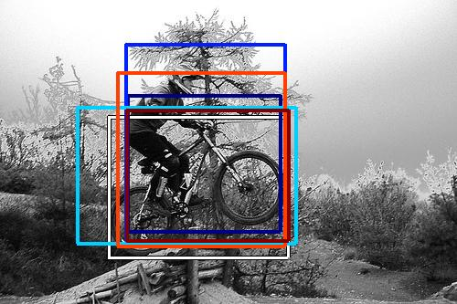

0.252985

0.447936

0.476742

0.513616

0.536003

0.536240

0.548481

0.594785

0.596285

0.603386
| Target image | 0.252985 | 0.447936 | 0.476742 | 0.513616 | 0.536003 | 0.536240 | 0.548481 | 0.594785 | 0.596285 | 0.603386 |
Target image |  18062.687500 |  12747.720703 |  9411.449219 |  5915.638672 |  5656.542480 |  5513.717285 |  3705.465332 |  3402.045410 |  3290.899902 |  3286.240479 |
Target image |  34818.523438 |  33251.750000 |  28715.171875 |  17497.292969 |  12892.150391 |  12267.348633 |  12240.652344 |  10399.151367 |  9088.992188 |  8765.843750 |
Target image |  46725.968750 |  39487.511719 |  33461.992188 |  32151.453125 |  13996.322266 |  13476.416992 |  12156.241211 |  10918.468750 |  8957.761719 |  8299.669922 |
Target image |  44992.308594 |  36764.136719 |  33348.531250 |  30755.050781 |  14295.623047 |  13829.330078 |  13030.086914 |  11125.565430 |  8840.693359 |  8429.408203 |